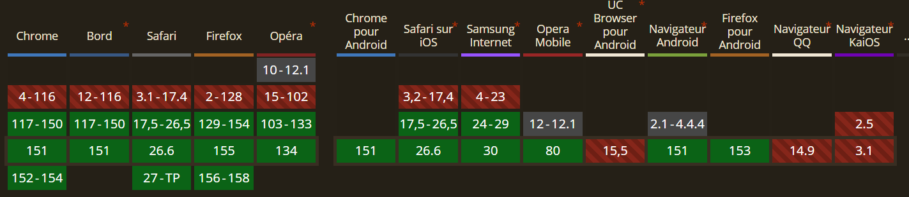

Explication
La règle d'or du CSS depuis toujours était : "On ne peut pas animer un
élément qui est en display: none". On devait faire des
bidouilles complexes avec opacity, des timers JS, ou
pointer-events. La règle @starting-style,
combinée à allow-discrete, permet enfin d'animer
l'apparition et la disparition d'un élément natif au moment précis de
son insertion dans le rendu (comme une balise
<dialog>).
Démo Live
Code CSS
.modal-dialog {
transition: display 0.4s allow-discrete, overlay 0.4s allow-discrete, transform 0.4s, opacity 0.4s;
opacity: 1;
transform: scale(1);
}
@starting-style {
.modal-dialog[open] {
opacity: 0;
transform: scale(0.9);
}
}Compatibilité et Fallback

Fallback : De l'amélioration progressive. Les navigateurs qui ne supportent pas cette nouvelle règle se contenteront de faire apparaître et disparaître la modale de manière instantanée, conservant ainsi 100% de la fonctionnalité et de l'accessibilité.